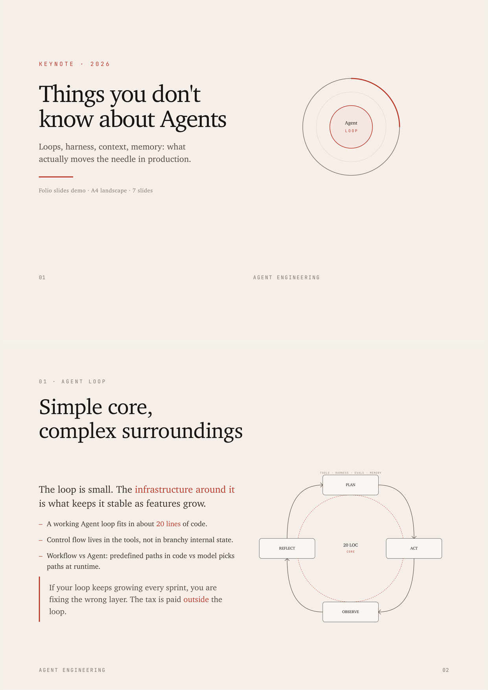
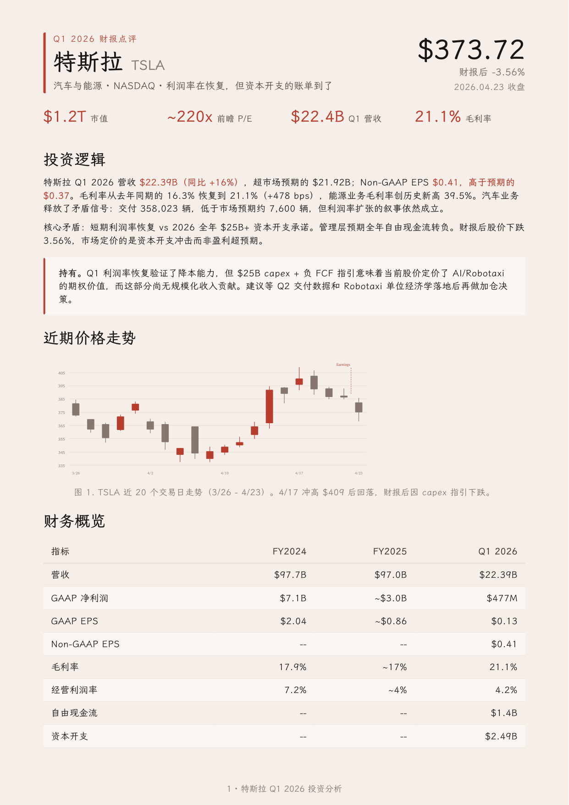
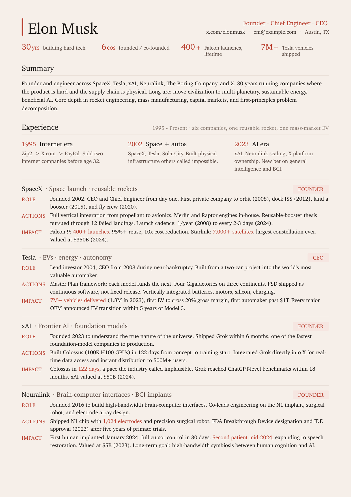

I started in workflow software, then moved into data products and applied AI. Across each shift, the pattern stayed the same: define the real decision, remove ornamental complexity, and make the page teach the system.
Today I focus on agent products, research tooling, and service interfaces. I work from evidence outward, using traces, interviews, and operating constraints before I choose the visual system.

Support operators had no stable way to understand why an agent answered the way it did. The product had strong model behavior but weak operational legibility, so escalations were slow and trust eroded.
I centered the page on trace readability: one persistent claim, one timeline of tool use, and one clear recovery path when confidence dropped. The layout reduced cross-panel scanning and gave reviewers a single visual hierarchy.
Escalation handling time fell 34%, quality-review throughput rose 2.1x, and onboarding time for new operators dropped from 10 days to 6.


Analysts were producing strong raw research but weak final communication. The product goal was to bridge that gap without forcing everyone into a slide-first workflow.
I treated templates as decision aids rather than decoration, with reusable evidence blocks, narrative scaffolds, and source visibility built into the layout.
Weekly briefing output rose from 3 to 8 deliverables, and leadership teams began using the product for recurring board materials.